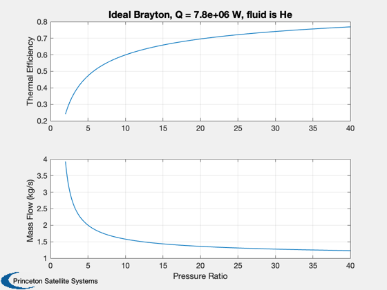
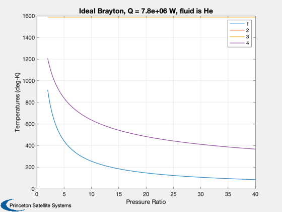

Analysis of an ideal Brayton cycle
Assumes the compressor and turbine are 100% efficient. The cycle points are:
1 - compressor inlet 2 - compressor outlet 3 - turbine inlet 4 - turbine outlet
Note: t2 = t4 in this ideal cycle.
See also BraytonIdeal, Plot2D
%-------------------------------------------------------------------------- % Copyright (c) 2016 Princeton Satellite Systems, Inc. % All rights reserved. %-------------------------------------------------------------------------- % Since 2017.1 %-------------------------------------------------------------------------- % The working fluid is Helium name = 'He'; gamma = 1.659; % Ratio of specific heats cP = 5190; % Thermal capacity (J/kg-deg-K) % Look at a range of pressure ratios pR = [linspace(2,10,50) linspace(10.1,40,50)]; % Input power qR = 7.8e6; % Temperature at compressor (selected according to operating temperature of % General Electric Ceramic Matrix Composite (CMC) turbine blades) % "SiC CMCs can withstand temperatures greater than 2400 F/1316 C" t3 = 1316 + 273; % convert C to deg-K % Calculate the ideal Brayton cycle and plot [eff, mDot, t] = BraytonIdeal( gamma, pR, cP, t3, qR ); titleStr = sprintf('Ideal Brayton, Q = %g W, fluid is %s',qR,name); Plot2D( pR, [eff;mDot], 'Pressure Ratio', {'Thermal Efficiency' 'Mass Flow (kg/s)'}, titleStr ); Plot2D( pR, t, 'Pressure Ratio', 'Temperatures (deg-K)', titleStr ); legend('1','2','3','4'); %-------------------------------------- % $Date$ % $Id: 7c42ff30be05bd6646fd160f0b99522531989ccc $ 